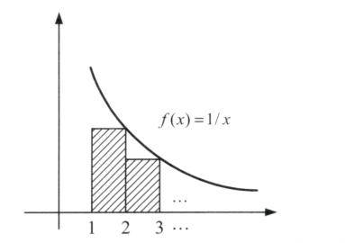

| lb | \( lb_2x \) |
| ln | \( ln_ex \) |
| lg | \( lg_{10}x \) or \( lg_2x \) |
harmonic series\( H_n= \frac{1}{1}+ \frac{1}{2}+ \dots \frac{1}{n} = \Theta(\ln n) \) |
proof
\( H_n=\int_1^n\frac{1}{x}dx \) \( =\ln n - \ln 1 \) \( =\log_e n - \log_e 1 \) \( =\ln n \)  \( \frac{1}{2}+ \frac{1}{3}+ \dots+ \frac{1}{n} =T(n)-1 \) \( \rightarrow T(n)-1 < \ln n \) \( \rightarrow T(n)< \ln n-1 \leq 2\ln n, \forall n\geq 3 \) \( \rightarrow T(n)=O(\ln n) \) 斜面面積\( T(n) \):大於 \( \ln n \) \( \rightarrow T(n)>\ln n \) \( \rightarrow T(n) = \Omega(\ln n) \) \( \because [T(n)=O(\ln n)] \cap [T(n)=\Omega(\ln n)] \) \( \therefore T(n)=\Theta(\ln n) \) |